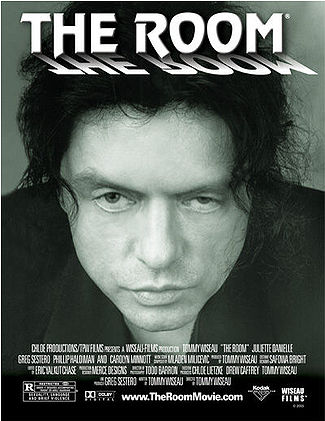

Filmes B Famosos
Plan 9 from Outer Space

Ano: 1959
Sinopse: Um grupo de alienígenas traz de volta os mortos para conquistar a Terra, mas suas tentativas são tão desastradas que se tornam um clássico do cinema cult.
The Room
Ano: 2003
Sinopse: Este drama romântico gira em torno de um amor traído, mas suas falhas de roteiro e atuação se tornaram tão notáveis que o filme é celebrado como um dos piores de todos os tempos.
Sharknado
Ano: 2013
Sinopse: Um tornado inusitado traz tubarões para as ruas de Los Angeles, obrigando um grupo de heróis improváveis a lutar pela sobrevivência em um dos filmes mais absurdos da história.
Sleepaway Camp
Ano: 1983
Sinopse: Durante o verão, adolescentes em um acampamento de férias começam a morrer de forma misteriosa. O filme é famoso por sua reviravolta chocante no final.
Birdemic: Shock and Terror
Ano: 2010
Sinopse: Um romance romântico se transforma em um pesadelo quando pássaros atacam uma pequena cidade, criando uma crítica ambiental de forma totalmente inesperada.
Manos: The Hands of Fate
Ano: 1966
Sinopse: Uma família se perde e acaba em um estranho hotel gerido por um culto de seguidores de Torgo, tornando-se uma experiência surreal e bizarra.
Attack of the Killer Tomatoes

Ano: 1978
Ano: Tomates mutantes atacam a civilização, levando a uma luta hilária para salvar o mundo. Um verdadeiro exemplo do humor absurdo dos filmes B.
Miami Connection
Ano: 1987
Sinopse: Um grupo de músicos de rock, mestres em artes marciais, enfrenta uma gangue de narcotraficantes em Miami, combinando música e ação de forma hilariante.